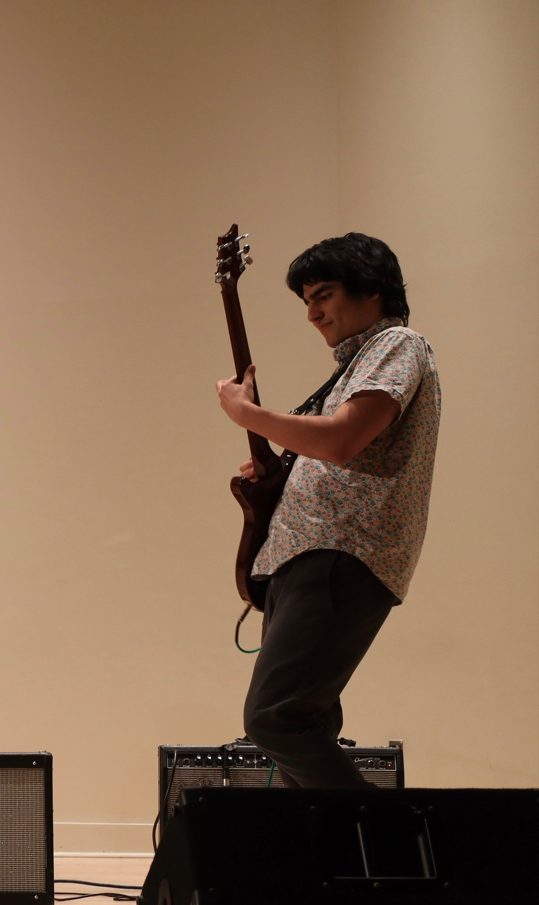
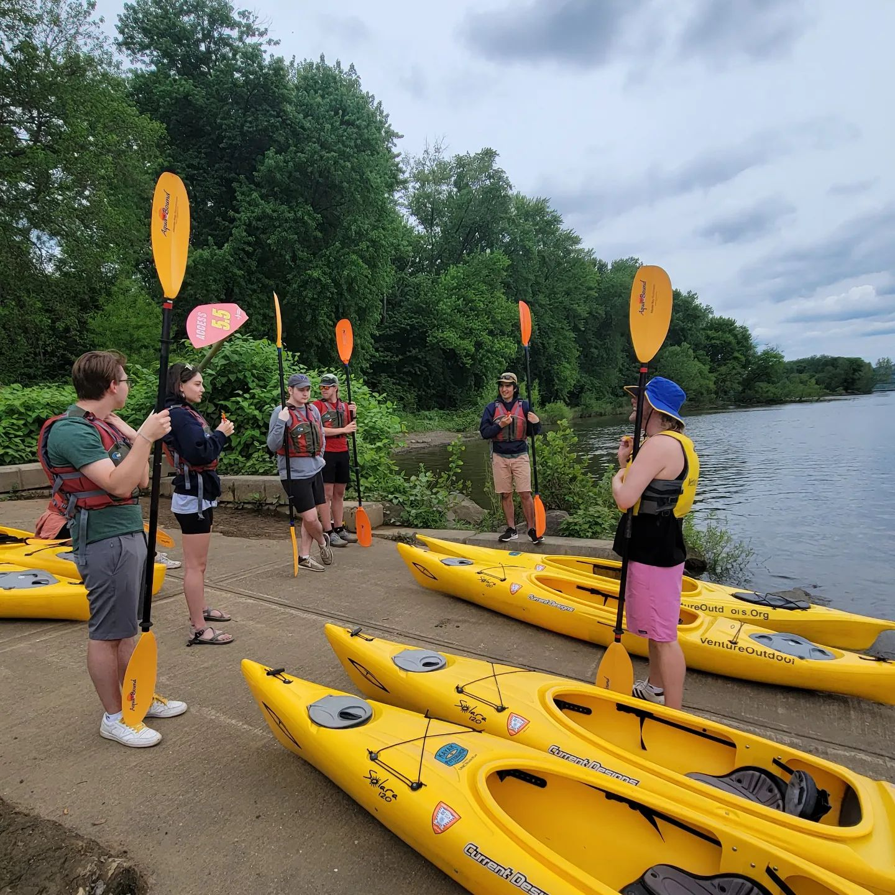
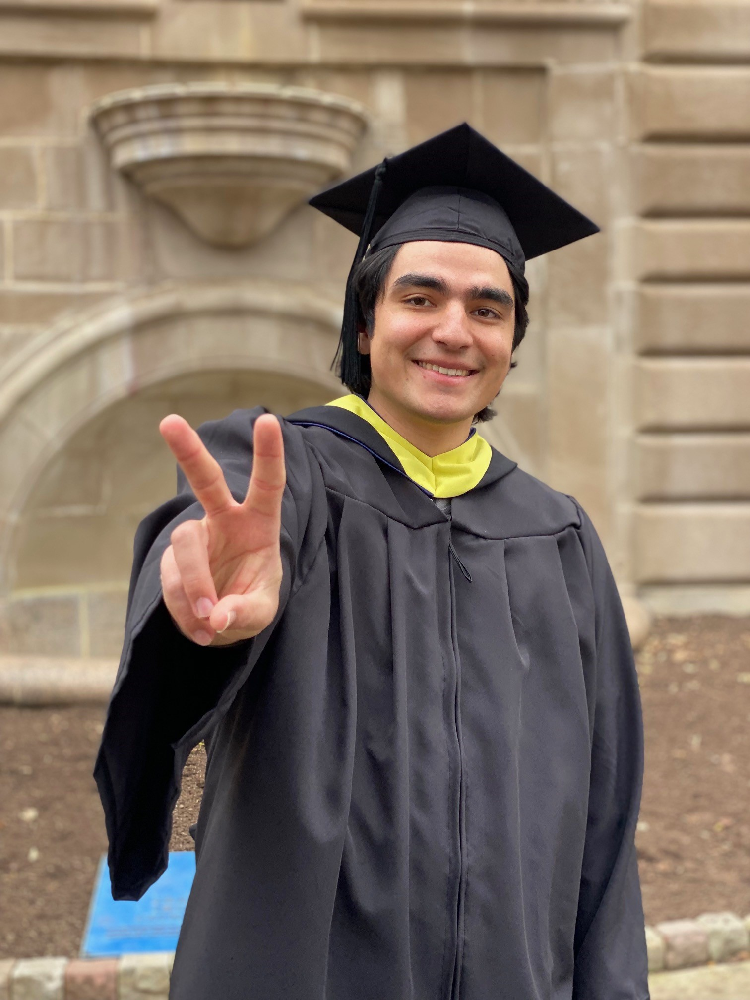

Bio/Introduction
I moved to Pittsburgh from Virginia in 2019 for school. I believe in contributing to the communities I live, work, and play in. I previously have done a software engineering internship at SMS Group, and I also have worked at the non-profit Venture Outdoors as a supervisor and trip leader for their Kayak Pittsburgh project. In the past I have volunteered with iServe at Pitt teaching coding skills to grade schoolers in the Homewood and Hill District neighborhoods of Pittsburgh. Technology offers a gateway to opportunity, and I want to be able to use my knowledge and skills to open to the communities around me as much as possible. I also am interested exploring in the ways that technology provides accesibility to artistic experiences.
Outside of work I enjoy playing music, sewing, and skateboarding.

Music
I currently play guitar and bass in the Broad St. Collective
Community
Being a part of the KP Crew has been an incredibly rewarding experience that has brought me closer to people from all over the city.
School
I graduated from the University of Pittsburgh in December of 2023 with a B.S. in Computer Science, a B.S. in Digital Narrative and Interactive Design, and a minor in music.
generated by Pitt Fuego
Why make a spark when you can light a fire?